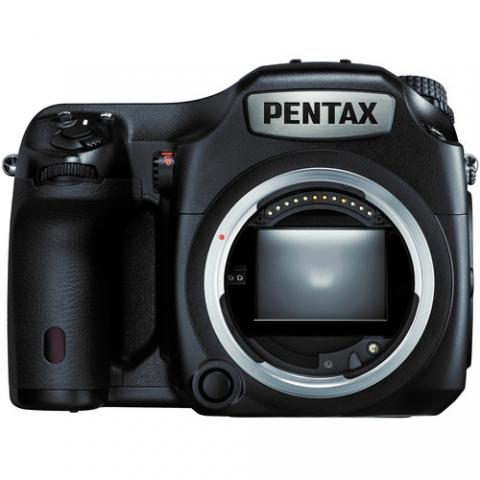
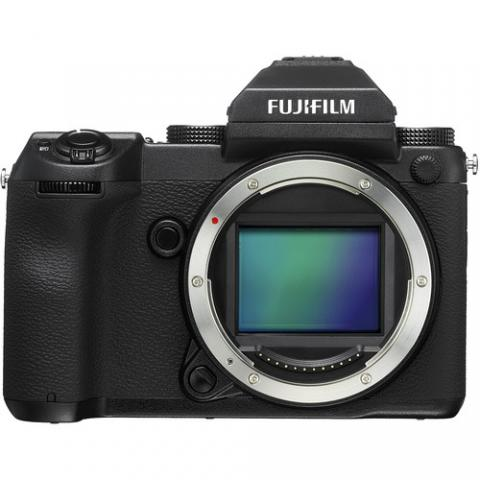

Тела

Средноформатна, магнезиева, устойчива на атмосферни влияния камера Премахнат Anti-Alias филтър • Prime III Image процесор • Full HD 1080 60i/30p/24p видео • SAFOX II TTL фазова автофокусна с-ма
Средноформатен безогледален фотоапарат с магнезиев корпус и защита от атмосферни влиания • Демонтиращ се електронен OLED визьор с 3.69 милиона точки резолюция • 3.2" подвижен сензорен LCD със 4:3 съотношение на страните • Full HD (1080p30) видеозапис
Средноформатна, магнезиева, устойчива на атмосферни влияния камера Премахнат Anti-Alias филтър • Prime III Image процесор • Full HD 1080 60i/30p/24p видео • SAFOX II TTL фазова автофокусна с-ма
Цена: 11499 лв.
Средноформатен безогледален фотоапарат с магнезиев корпус и защита от атмосферни влиания • Демонтиращ се електронен OLED визьор с 3.69 милиона точки резолюция • 3.2" подвижен сензорен LCD със 4:3 съотношение на страните • Full HD (1080p30) видеозапис